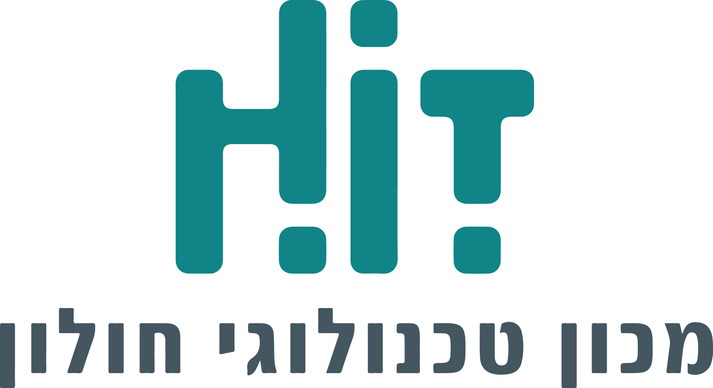

מסע בעקבות דפי עד
תוצר זה פותח במסגרת פרויקט גמר לתואר ראשון, ה'תש"פ
הפקולטה לטכנולוגיות למידה

צוות הפרויקט:
טל רביבו ונעמה בלום
מנחות:
מיטל אמזלג ונגה לביא-רזניק
בשיתוף עם
@כל הזכויות שמורות למכון הטכנולוגי חולון HIT
בחלקם של התוצרים מוצגים אייקונים מהאתרים: icons8 || flaticon